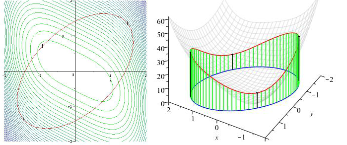

Mathematics for Electrical Engineering
 This repository contains material for a course on mathematics for electrical engineering students. Most of the content is vector calculus.
Notes
Lecture slides:
screen version
and
print version
Problems and solutions
Maple worksheets for the
notes
and
problem sheets
Interactive diagrams
All files
(including LaTeX source etc, released under a Creative Commons license)